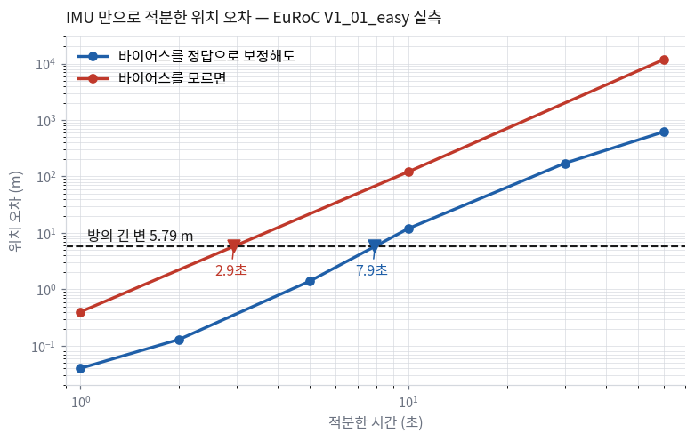

만드는 것은 하나다. 영상과 IMU 값을 받아서, 자기가 어디를 어떻게 지나왔는지와
주변에 무엇이 있었는지를 내놓는 프로그램이다.
이름을 붙이면 단안 시각-관성 SLAM(monocular visual-inertial SLAM)이 된다.
들어가는 것
나오는 것
흑백 영상 한 대분 (752×480, 초당 20장) IMU 값 (초당 200개, 가속도 3 + 각속도 3)
시각마다의 위치와 자세 — 미터 단위로 3차원 점 지도 그 결과가 얼마나 맞는지를 재는 수치
🆕 오늘 처음 나오는 이름들
SLAM
Simultaneous Localization and Mapping. 지도를 모르는 채로 지도를 만들면서 동시에 그 안에서 자기 위치를 찾는 일이다.
VO · VIO
VO(Visual Odometry)는 영상만으로 얼마나 움직였는지를 잇는 것이고, VIO는 거기에 IMU를 더한 것이다.
SLAM과의 차이는 지도를 계속 들고 있으면서 예전에 온 곳을 다시 알아보느냐다.
IMU
가속도계와 자이로가 든 관성 센서. 카메라보다 훨씬 빠르게(여기서는 10배) 값을 낸다.
프론트엔드 · 백엔드
프론트엔드는 영상에서 「무엇이 무엇과 같은 점인가」를 뽑는 쪽이고,
백엔드는 그 관측들을 모아 위치와 지도를 푸는 쪽이다. 이 강의는 둘을 나눠서 만든다.
랜드마크
지도를 이루는 3차원 점 하나. 영상에서는 여러 프레임에 걸쳐 같은 곳으로 보이는 점이다.
ATE
Absolute Trajectory Error. 내가 만든 궤적과 정답 궤적의 차이를 미터로 잰 값. 이 과목의 성적표 같은 숫자다.
이 이름들은 뒤 회차에서 하나씩 다시 나옵니다. 지금은 대충 감만 잡아 두면 됩니다.
안에 무엇이 들어가나 — 여섯 덩이
한 번에 통째로 만들지 않는다. 덩이를 하나씩 만들고, 매번 「이제 이건 돌아간다」를 하나씩 늘린다.
아래가 학기 끝에 손에 남을 구조다.
영상 · IMU → ① 데이터 소스 → ② 특징 추적 ─┐
├→ ④ 백엔드 → ⑤ 루프 클로징 → 궤적 · 지도
③ IMU 사전적분 ─────────────┘
⑥ 평가 (ATE · 일관성)
덩이
하는 일
언제 만드나
①
데이터 소스 — 파일을 읽어 영상과 IMU를 시각 맞춰 내놓는다
1~2회
②
특징 추적 — 영상에서 「무엇이 무엇과 같은 점인가」를 뽑는다
5·7회
③
IMU 사전적분 — 영상 사이의 IMU를 하나로 묶는다
10·12회
④
백엔드 — 관측을 모아 위치와 지도를 푼다. 두 벌 만든다
11·13회
⑤
루프 클로징 — 예전에 온 곳을 알아보고 과거를 고친다
14회
⑥
평가 — 얼마나 맞는지 숫자로 낸다
내내
해석: ④번이 두 벌인 것에 주목한다.
필터로 한 번 완주하고, 최적화로 다시 만든다.
프론트엔드는 그대로 두고 백엔드만 갈아 끼워 같은 데이터에서 숫자를 비교하기 위해서다.
그러려면 처음부터 갈아 끼워지도록 설계돼 있어야 한다 —
이것이 이 강의가 「설계」에 시간을 쓰는 이유이고, 2회에서 바로 시작한다.
쓰는 데이터는 EuRoC다. 취리히 공대에서 드론에 카메라와 IMU를 달고 실내를 날린 기록이고,
모션캡처 장비로 잰 정답 궤적이 같이 들어 있다.
정답이 있다는 것이 이 강의에서 아주 중요해진다 — ⑦절에서 다시 나온다.
V1_01_easy 한 시퀀스
값
길이
145.6초 · 이동 거리 58.59 m
방 크기
4.4 × 5.8 m
평균 속도
0.41 m/s (최대 각속도 54 °/s)
영상과 IMU의 시각
영상 간격 50.000 ms · IMU 5.000 ms — 영상 사이에 IMU가 정확히 10개
해석: 마지막 줄이 고마운 조건이다. 실제 로봇에서는 두 센서의 시각이 조금씩 어긋나서
그것부터 맞춰야 하는 경우가 많다. 이 데이터는 그 문제가 없어서
한 학기 동안 SLAM 자체에만 집중할 수 있다.
② 왜 카메라와 IMU를 같이 쓰나 — 두 개의 실패
센서를 둘 쓰면 좋겠다는 말은 하나 마나 한 말이다. 그보다는
각각을 혼자 썼을 때 어떻게 무너지는지를 먼저 보는 편이 낫다.
아래 표는 EuRoC 데이터에서 실제로 재 본 값이다.
실패 ① — IMU만 적분하면
가속도를 두 번 적분하면 위치가 나온다. 원리는 맞다. 결과는 이렇다.
경과
바이어스를 정답으로 보정해도
바이어스를 모르면
1초
0.04 m
0.40 m
10초
11.98 m
121.3 m
60초
617 m
11.8 km

가로 점선이 방의 크기다. 두 곡선이 그 선을 넘는 순간
궤적이 방을 뚫고 나간다. 표의 값을 로그로 이어 읽으면
바이어스를 알아도 7.9초, 모르면 2.9초다.
해석: 방이 4.4 × 5.8 m다. 10초면 이미 방 바깥이다.
그리고 두 번째 열이 더 중요하다 — 바이어스를 정답으로 넣어 줘도 10초에 12 m가 벌어진다.
센서를 더 좋은 것으로 바꿔서 될 문제가 아니라는 뜻이다.
왜 이렇게 되는지는 10회에서 숫자로 따라가 본다.
실패 ② — 카메라만 쓰면
영상만으로도 궤적을 만들 수 있다. 다만 크기를 정하지 못한다.
같은 영상이 「작은 방에서 천천히 움직인 것」인지 「큰 방에서 빠르게 움직인 것」인지 구별되지 않는다.
모양은 맞는데 배율을 모르는 상태다. 이것을 스케일 모호성이라고 하고, 5회에서 식으로 확인한다.
그래서 둘을 합친다
IMU는 짧은 시간에는 정확하고 길게 가면 무너진다.
카메라는 길게 봐도 안정적인데 크기를 모른다.
서로의 빈칸을 정확히 메우는 조합이라서 요즘 나오는 드론·헤드셋·로봇이 거의 다 이 둘을 쓴다.
③ EuRoC 한 줄 읽기 — 이 데이터가 무엇을 주나
학기 내내 이 데이터 하나를 본다. 그러니 어떻게 생겼는지부터 알아 둔다.
압축을 풀면 센서마다 폴더가 하나씩 있고, 각 폴더에 측정값 CSV와 사양 YAML이 들어 있다.
mav0/
├── cam0/ data/*.png (2912장) · data.csv · sensor.yaml ← 우리가 쓰는 카메라
├── cam1/ data/*.png (2912장) · data.csv · sensor.yaml ← 오른쪽 카메라. 안 쓴다
├── imu0/ data.csv (29 120줄) · sensor.yaml
├── vicon0/ data.csv · sensor.yaml ← 모션캡처 원시 측정
├── state_groundtruth_estimate0/ ← 이게 정답이다
│ data.csv (28 712줄) · sensor.yaml
├── pointcloud0/ data.ply (111.8 MB) · sensor.yaml ← Leica 레이저 스캔
└── body.yaml
해석: 눈여겨볼 것은 정답이 여러 겹이라는 점이다.
궤적의 정답이 있고(state_groundtruth_estimate0),
지도의 정답도 있다(pointcloud0).
⑦절에서 나올 「어느 모듈이 범인인지 가르는 일」이 가능한 것은 이 구조 덕분이다.
해석: 아래 두 줄이 이 데이터셋을 고른 결정적인 이유다.
보통의 데이터셋은 자세만 준다. 그러면 결과가 틀렸을 때
「어딘가 틀렸다」까지만 알 수 있다.
속도와 바이어스의 정답이 있으면 「속도 추정은 맞는데 바이어스가 틀렸다」까지 갈 수 있고,
그것이 ⑦절 4단(정답 부분 주입)이 하는 일이다.
⚠️ 정답이 데이터 전체를 덮지 않는다
정답 궤적은 첫 영상보다 1.040초 늦게 시작하고,
마지막 영상보다 0.955초 일찍 끝난다.
그 구간을 정답이 있는 것처럼 다루면 첫 프레임부터 아무것도 안 맞는다.이번 주 과제(로더)의 함정이 정확히 이것이다.
④ 14회의 지도 전체 그림
14회를 네 부로 나눠 두었다. 앞의 두 부는 영상에서 3차원을 꺼내는 법이고,
뒤의 두 부는 거기에 IMU를 묶어 하나의 추정 문제로 만드는 법이다.
한 부가 끝날 때마다 「이제 이건 돌아간다」가 하나씩 늘어나도록 놓았습니다.
부
회차
무엇을 하나
끝나면 할 수 있는 것
1부 3차원 기하
1~5
좌표계와 표기 규약, 회전과 Lie 이론, 카메라 모델과 왜곡, 에피폴라 기하와 삼각측량
사진 두 장에서 3차원 점을 만들고, 그 점이 영상 어디에 찍혀야 하는지 계산할 수 있다
2부 프론트엔드
6~9
SLAM 30년의 지도, 특징점 검출·추적·매칭, 아웃라이어 제거, 번들조정
영상에서 믿을 수 있는 대응점을 뽑고, 재투영 오차를 최소화해 다듬을 수 있다
3부 IMU와 상태추정
10~12
IMU 측정 모델과 바이어스, 베이즈 필터·칼만필터·오차상태 필터, IMU 사전적분과 초기화
불확실한 값을 확률로 다루고, 영상과 IMU를 하나의 문제로 묶을 수 있다
4부 백엔드와 시스템
13~14
그래프 SLAM과 marginalization, 루프 클로징, 전체 시스템과 평가
완성한 시스템을 정답 궤적과 비교해 숫자로 평가할 수 있다
중간고사는 8회입니다. 1부와 2부 앞쪽에서 다룬 기하가 범위입니다.
해석: 1부가 다섯 회로 가장 길다. 좌표계와 회전에 그만큼 시간을 쓰는 이유가 있다 —
이 부분이 틀리면 뒤가 전부 흔들리는데, 틀려도 프로그램은 죽지 않기 때문이다.
궤적은 여전히 그럴듯한 곡선으로 나오고, 숫자만 조용히 틀려 있다.
이 과목에서 가장 자주 겪게 되는 상황이고, ⑦절이 그것을 다룬다.
⑤ 왜 고전 SLAM인가
요즘 3차원 쪽에서 화제가 되는 것은 NeRF나 3D Gaussian Splatting 같은 이름들이다.
그런데 이 수업에서 만드는 것은 2015~2018년쯤에 정리된 시스템(ORB-SLAM, VINS-Mono)에 가깝다.
왜 지금 그걸 만드나 하는 생각이 들 수 있다.
이유는 그 시스템들이 지금도 뼈대이기 때문이다. 최신 방법들이 바꾼 것은 대체로 둘이다 —
대응점을 어떻게 찾느냐와 지도를 무엇으로 표현하느냐.
그 안쪽에서 측정 오차의 제곱합을 최소화한다는 뼈대는 거의 그대로 남아 있다.
그래서 뼈대를 한 번 손으로 세워 본 사람은 최신 논문을 읽을 때 무엇이 새로운지 바로 보이고,
안 세워 본 사람은 매번 처음부터 읽게 된다.
그렇다고 최신 쪽을 구경만 하고 넘어가지는 않습니다. 이 강의에는 갈아 끼우는 자리를 둡니다.
갈아 끼우는 자리
기본으로 만드는 것
바꿔 끼워 볼 수 있는 것
특징점 검출·기술
Shi-Tomasi · ORB
학습 기반 특징점 (SuperPoint 계열)
대응점 찾기
KLT 추적 · 기술자 매칭
학습 기반 매칭 (LightGlue 계열)
예전에 온 곳 알아보기
BoW (DBoW2)
학습 기반 장소 인식 (NetVLAD 계열)
해석: 세 자리 모두 프론트엔드다. 백엔드는 그대로 둔다.
학습이 실제로 고전 방법을 이긴 자리가 대체로 여기이기 때문이다 —
조명이 바뀌거나 시점이 크게 달라졌을 때 「같은 점인가」를 판단하는 일은 기하 문제라기보다 인식 문제에 가깝다.
백엔드를 고정해 두고 프론트엔드만 바꾸면, 무엇이 얼마나 좋아졌는지 같은 데이터에서 숫자로 비교할 수 있다.
SLAM이 EKF에서 시작해 여기까지 오는 동안 무엇이 왜 바뀌었는지는
6회에서 한 번에 정리합니다. 지금은 「고전을 만들지만 최신과 끊겨 있지는 않다」 정도로 두면 됩니다.
⑥ 코드를 맡기면 무엇이 남나 사람이 한다
SLAM 코드는 에이전트가 꽤 잘 짜 준다. 빌드되고, 돌아가고, 궤적을 뱉는다.
그러면 이 과목에서 사람은 무엇을 하나?
이 강의가 잡은 답은 넷이다. 좌표계를 정하고, 상태를 정의하고, 검증을 설계하고,
틀린 결과를 보고 어느 모듈이 범인인지 가르는 것.
넷 다 코드를 치는 일이 아니고, 넷 다 대신 시키기 어렵다.
에이전트는 여러분이 어제 어떤 궤적을 봤는지 모르고, 무엇을 맞다고 부를지도 모른다.
해석: 그래서 이 과목이 실제로 연습시키는 것은
일을 의뢰하고 받은 것을 판정하는 일이다.
판정 기준을 사람이 먼저 숫자로 정해 두지 않으면, 돌아오는 것은
「정상적으로 동작합니다」라는 문장뿐이다. 그 문장은 SLAM에서 아무 정보도 아니다 — ⑥절.
신호등 — 자료 곳곳에 붙어 있는 표시
매 회차 절 제목 옆에 배지가 하나씩 붙어 있습니다.
그 일이 검증 가능한 일인가를 나타냅니다.
배지
뜻
예
맡긴다
틀려도 결과가 바로 눈에 보인다
파일 파싱, CMake, 시각화 코드, PLY 쓰기
맡기되 검사한다
코드는 맡기고 판정 기준은 사람이 정한다
야코비안, 사전적분, 삼각측량
사람이 한다
대신 시킬 대상 자체가 없다
좌표계 규약, 상태 정의, 잡음 값의 출처, 실패 원인 좁히기
권하지 않는다
해 보면 대체로 시간을 더 쓰게 되는 것
검증 없이 한 번에 전체 통합, 결과가 안 맞을 때 계수부터 바꾸기
자료에 코드가 나올 때와 프롬프트가 나올 때
강의자료에 코드를 그대로 싣는 경우와, 코드 대신 그 코드를 받아내는 의뢰서를 싣는 경우가 있습니다.
기준은 하나입니다 — 개념이 코드 모양 안에 들어 있느냐.
어떤 코드
자료에서
왜
짧고, 그 몇 줄에 개념이 들어 있는 것 예: 잡음 이산화 두 줄, 순역방향 검사
코드를 그대로 싣는다
읽는 것이 곧 이해하는 것이다
길고 기계적인 것 예: 데이터 파서, Ceres 팩터, 사전적분 전파
의뢰서와 검사 목록을 싣는다
200줄을 읽는 시간보다 받은 200줄에서 무엇을 확인할지 아는 편이 남는다
의뢰서를 어떻게 쓰는지는 아래 🤖절에서 여섯 칸으로 정리합니다.
⑦ 맞는지 어떻게 아나 사람이 한다
이 절이 이 과목을 다른 SLAM 수업과 가르는 자리다.
보통의 프로그램은 틀리면 죽는다. 예외가 나거나, 화면이 깨지거나, 값이 발산한다.
SLAM은 그렇지 않다. 회전 하나가 전치돼 있어도 프로그램은 잘 돌고,
궤적도 여전히 그럴듯한 곡선으로 나온다. 눈으로는 구별되지 않는다.
그래서 틀렸다는 사실을 알아내는 장치를 먼저 만들어 두는 순서로 학기를 짰다.
아래 여섯 단을 학기 내내 쓴다. 규칙은 하나다 — 아래 단을 통과하지 못한 것은 위로 올리지 않는다.
단
무엇을 하나
통과 기준
여기서 걸리는 것
처음 쓰는 곳
1
항등식 검사 — 수식이 성립하는지 본다
RᵀR = I, 오차 < 1e-12
정규화 누락, 전치 실수
2회
2
수치 야코비안 대조 — 손으로 쓴 미분 vs 유한차분
상대오차 < 1e-6
부호 실수, perturbation 방향 혼동
3회
3
무잡음 합성 데이터 — 정답을 아는 데이터를 넣는다
추정 오차 < 1e-8
좌표계 규약 위반, 시각 정렬 실수
5회
4
정답 부분 주입 — 한 모듈만 정답으로 바꿔 본다
어느 모듈을 바꿨을 때 정상이 되나
범인 특정
4회
5
잡음 켜기 — 합성 데이터에 잡음을 단계적으로 넣는다
오차가 잡음에 비례해 늘어나는가
잘못 설정한 잡음 값
11회
6
실제 데이터 평가 — EuRoC + ATE
궤적 오차와 일관성 지표
나머지 전부
13회
⛔ 이 과목에서 권하지 않는 것 하나
결과가 안 맞을 때 잡음 계수·임계값·반복 횟수부터 바꿔 보는 것.
3단(무잡음 합성)에서 오차가 0이 아니면 그건 튜닝할 문제가 아니라 버그일 가능성이 높다.
계수를 만지면 증상은 가려지고 원인은 남아서, 나중에 훨씬 찾기 어려워진다.
해석: 3단이 이 사다리의 핵심이다. 정답을 아는 데이터를 스스로 만들어 넣는 것인데,
이걸 건너뛰고 곧장 실제 데이터로 가는 것이 학기 중에 가장 많이 헤매게 되는 경로다.
그래서 합성 데이터를 만드는 일을 학기 중반에 따로 한 번 다룹니다.
⑧ 눈으로 본다 — 시각화 맡긴다
SLAM에서 「ATE가 0.6 m입니다」라는 숫자 하나는 원인을 거의 알려 주지 않는다.
그림 한 장이 훨씬 많이 말해 준다. 궤적이 통째로 돌아가 있는지, 크기만 다른지,
특정 구간에서만 튀는지는 그려 보면 몇 초 만에 구별된다.
그래서 매 회차마다 그 회차에서 새로 그리게 되는 그림을 하나씩 정해 두었습니다.
학기 내내 보게 되는 그림은 대체로 네 종류입니다.
무엇을 그리나
무엇이 보이나
영상 위 겹쳐 그리기 — 특징점, 추적선, 재투영 오차
프론트엔드가 건강한지
3차원 궤적과 점 지도, 카메라 시야뿔
좌표계를 잘못 잡았는지 (통째로 돌아가 있으면 바로 보인다)
시계열 — 추적된 점 개수, 잔차, 바이어스, 불확실도
언제부터 나빠지기 시작했는지
정답 궤적과 겹쳐 보기
모양이 틀린 건지 크기가 틀린 건지
쓰는 도구
도구
무엇에 쓰나
Rerun
영상·3차원·시계열을 하나의 시간축에 올려 놓고 앞뒤로 돌려 본다. SLAM 디버깅에 가장 잘 맞는다
evo
궤적 오차(ATE·RPE)를 재고 그리는 표준 도구. 평가는 직접 짜지 않는다
Open3D · CloudCompare
만든 점 지도를 정답 점군과 겹쳐 놓고 거리 분포를 본다
matplotlib
시계열과 히스토그램
해석: 시각화 코드는 맡긴다입니다. 에이전트가 잘 짜는 영역이고,
틀려도 결과가 눈에 바로 보여서 위험이 낮다.
다만 편한 방법이 하나 있다 — C++ 쪽은 표준 형식(궤적 파일·PLY·로그)으로 파일만 남기고,
그리는 일은 파이썬이 그 파일을 읽어서 하는 것.
빌드가 가벼워지고, 같은 파일이 평가에도 그대로 쓰인다.
[할 일] 위 그래프의 3차원 판을 만들어 줘.
정답 궤적에서 한 시각을 골라 그 상태로 출발해 IMU만 적분한 궤적을 그리고,
같은 구간의 정답 궤적을 다른 색으로 겹쳐 줘.
방 크기(4.4 × 5.8 × 1.0 m)를 상자로 같이 그려 줘 — 그래야 「벗어난다」가 눈에 보인다.
[검증]10초 지점에서 두 궤적의 거리를 숫자로 찍어 줘.12 m 근처가 아니면 경고를 띄워 줘 — 위 표의 실측값이다.
출발 시각을 세 군데 다르게 잡아 세 번 재고, 세 값을 모두 찍어 줘.
[함정] 정답 궤적은 첫 영상보다 1.040초 늦게 시작한다.
그 앞 구간에서 출발점을 고르면 정답이 없다.
[남긴다] 중력값을 얼마로 썼는지 적어 줘.
받은 코드에서 확인할 것
□ 10초 오차가 12 m 근처로 나오는가 ← 크게 다르면 중력 방향이나 좌표계가 틀렸다
□ 출발 시각 세 군데의 값이 비슷한가 ← 하나만 튀면 그 구간에 뭔가 있다
□ 방 상자를 정답 궤적의 범위로 그렸는가, 숫자를 그냥 박았는가
□ 중력을 9.81 로 썼는가 9.8081 로 썼는가 ← 10회에서 이 차이가 다시 나온다
⑨ 환경과 데이터 맡긴다
첫 주에 빌드로 시간을 쓰지 않습니다. 도커 이미지 하나를 드리고,
그 안에 필요한 것이 다 들어 있습니다. 무엇이 왜 들어 있는지만 알아 두면 됩니다.
무엇
버전
왜 이것인가
Ubuntu
24.04 (컨테이너)
아래 라이브러리가 apt로 다 깔린다
C++
C++17
std::optional과 구조적 바인딩까지. 20은 필요 없다
Eigen
3.4
선형대수 전부. 2회부터 쓴다
Sophus
1.24.6
SO3·SE3와 exp/log.
3회의 회전 이야기가 전부 이 안에 있다
OpenCV
4.x
영상 I/O, 특징점, 광류, RANSAC. 5.0은 아직 쓰지 않는다
Ceres Solver
2.2.0
번들조정과 슬라이딩 윈도우. 9회부터
GTSAM
4.2.2
팩터그래프. 사전적분 정답 대조용(12회)
Rerun · evo
최신 (파이썬)
시각화와 평가. ⑧절
⚠️ 에이전트가 자주 틀리는 것 하나를 미리 말해 둡니다
인터넷의 Ceres 예제 대부분이 LocalParameterization을 씁니다.
2.2에서 그 클래스는 없습니다.Manifold로 바뀌었습니다.
빌드 오류로 바로 드러나긴 하는데, 「왜 예제가 안 되지」에서 시간을 버리기 쉬운 자리라
9회 자료에도 다시 적어 둡니다.
의뢰서의 [함정] 칸에 이런 것을 미리 적는 연습이 🤖절에서 하는 일입니다.
데이터를 받는 법
무엇
크기
언제 쓰나
연습판 (V1_01의 첫 30초)
약 100 MB
1~4회. 로더와 카메라 모델. 반복이 빨라야 한다
V1_01_easy 전체
1.15 GB
5회부터 학기 내내
Leica 점군
111.8 MB
4회 오버레이 검증
V1_02_medium
비슷
최종 평가에서만. 처음 보는 난이도
클라우드 드라이브 주소로 따로 안내합니다.
공식 배포처는 묶음 단위(6 GB)라서 그대로 받으면 안 쓰는 것이 대부분입니다.
수업 전에 미리 받아 두면 수월합니다.
데이터 출처: Burri 외, The EuRoC micro aerial vehicle datasets, IJRR 2016.
라이선스는 비상업적 사용 허용(In Copyright – Non-Commercial Use Permitted)입니다.
🤖 의뢰서 여섯 칸 맡기되 검사한다
이 과목에서 프롬프트는 대화가 아니라 작업 지시서입니다.
아래 여섯 칸을 채우면 쓸 만한 구현이 오고, 빠뜨리면 빠뜨린 칸이 그대로 결함으로 돌아옵니다.
오른쪽 열이 그 대응입니다.
#
의뢰서에 넣는 것
빠지면 오는 것
1
규약을 함께 준다 — 표기·부호·단위 약속
left 와 right perturbation이 섞인 코드. 돌아가지만 수렴이 이상하다
2
인터페이스를 고정해 준다 — 헤더를 그대로 붙여 준다
시험을 붙일 자리가 없는 코드. 인터페이스를 맡기면 검증 지점이 사라진다
3
참조 구현을 지목한다 — "VINS-Mono와 같은 방식으로"
어디서도 본 적 없는 자기류 구현. 논문과 대조가 안 된다
4
검증을 같은 의뢰서 안에서 요구한다 🔴
돌아가는데 맞는지 모르는 코드. 이 과목에서 가장 비싼 실수
5
알려진 함정을 미리 적어 준다
인터넷 예제의 옛 API를 그대로 쓴 코드
6
임의로 정한 것을 적어 내게 한다
조용히 정해진 부호와 단위. 나중에 원인을 못 찾는다
여섯 칸을 다 채운 의뢰서 한 장 — 이번 주 과제가 그대로 예제입니다
[규약] 아래 다섯 줄을 표기 약속으로 삼아 줘. 코드 전체에서 이것만 쓴다.
T_WB = 월드에서 본 몸체 · 몸체 프레임 = IMU · 카메라는 +z 광축/+x 오른쪽/+y 아래 ·
중력은 g_W = (0, 0, −9.81) · 쿼터니언은 Hamilton
[인터페이스] 아래 헤더의 시그니처를 바꾸지 말고
EuRoC ASL 형식을 읽는 EurocSource를 구현해 줘.
(여기에 data_source.hpp 를 붙여 넣는다)
[단위] 시각은 int64_t 나노초로만 다뤄 줘.
double 초로 바꾸지 말아 줘.
[검증] 아래 두 시험을 같이 써 줘.
① 영상 한 장 사이의 IMU 샘플 수를 세어 10이 아니면 실패로 출력하는 시험.
② 첫 영상보다 앞선 시각에서 groundTruth()가
nullopt를 주는지 보는 시험.
실패하면 어느 프레임에서 몇 개가 나왔는지 함께 찍어 줘.
[함정] 압축을 풀면 __MACOSX/와
.DS_Store가 섞여 있다. 정답 궤적은 첫 영상보다 1.040초 늦게 시작한다.
[남긴다] 규약에 없어서 네가 임의로 정한 것이 있으면 코드 맨 위에 목록으로 적어 줘.
해석: 이 의뢰서에서 [검증] 칸이 절반입니다.
나머지 다섯 칸은 좋은 코드를 받기 위한 것이고, 이 칸은 받은 것을 판정하기 위한 것입니다.
다음 절이 그 칸을 자세히 봅니다.
[검증] 칸에 들어가는 네 줄 사람이 한다
코드를 받고 나서 「테스트도 짜 줘」라고 덧붙이는 것으로는 부족합니다.
그때 오는 것은 방금 짠 코드가 통과하도록 맞춰진 시험입니다.
그래서 무엇으로 판정할지를 코드보다 먼저 말합니다.
무엇을 적나
위 의뢰서에서는
어떤 시험을
영상 사이 IMU 개수를 세는 시험
어떤 입력으로
V1_01_easy 전체 구간
어떤 숫자를 넘으면 실패인지 🔴
10이 아니면 실패
실패했을 때 무엇을 찍을지
어느 프레임에서 몇 개가 나왔는지
해석: 세 번째 줄이 이 과목이 갈리는 자리입니다.
통과 기준을 사람이 먼저 숫자로 정해 줍니다.
기준을 에이전트가 정하게 두면 「오차가 충분히 작습니다」가 돌아옵니다.
그게 1e-6인지 1e-2인지가 이 강의에서 갈리는 전부입니다.
받은 코드에서 확인할 것
의뢰서 옆에는 언제나 이 목록이 따라붙습니다. 목록 없이 의뢰서만 있는 것은
코드를 그냥 붙여 넣는 것보다 나쁩니다 — 읽지 않은 200줄이 프로젝트에 쌓이기 때문입니다.
□ 시각을 double 로 바꾼 곳이 정말 하나도 없는가 ← grep 한 번이면 된다
□ 요구한 시험 두 개가 실제로 있는가, 그리고 돌려 봤는가
□ 실패했을 때 프레임 번호가 찍히는가 ← 안 찍히면 원인을 못 좁힌다
□ __MACOSX/ 를 거른 코드가 어디 있는가
□ 임의로 정한 것 목록이 맨 위에 있는가, 그중 내가 동의하지 않는 것이 있는가
틀렸을 때 하는 말은 따로 있습니다 권하지 않는다
「고쳐 줘」는 이 과목에서 권하지 않는 문장입니다.
그렇게 말하면 에이전트는 증상이 사라질 때까지 코드를 바꿉니다.
증상은 없어지고 원인은 남는데, SLAM에서는 그 상태가 아주 오래 안 들킵니다.
영상 한 장 사이의 IMU 개수를 세는 시험이 2 137번 프레임에서 9개로 실패한다.
앞뒤 프레임은 10개다. 원인 후보를 세 개 대고, 각각을 확인할 수 있는 가장 작은 실험을 하나씩 제안해 줘.
코드는 아직 고치지 말아 줘.
해석: 이것이 학기 내내 가장 자주 쓰게 되는 의뢰서입니다.
후보를 대게 하는 것은 에이전트, 고르는 것은 사람입니다.
고르려면 데이터를 알아야 하고, 데이터를 아는 쪽은 여러분입니다.
⑥절에서 말한 「범인을 가르는 일」이 실제로는 이 모양을 하고 있습니다.
✅ 오늘의 점검
조금 더 알아두면 시험 범위 아님
다음 시간(2회)에는 좌표계와 표기 규약을 다룹니다.
「T_WB인가 T_BW인가」를 한 시간 내내 이야기하는 회차라
처음에는 좀 심심하게 들릴 수 있는데, 학기 전체에서 가장 수익률이 높은 시간입니다.
나중에 궤적이 이상하게 나오는 이유의 절반쯤이 여기서 나옵니다.
데이터와 도커 이미지는 클라우드 드라이브 주소로 따로 안내합니다.
EuRoC은 한 시퀀스가 1.15 GB쯤 되니 수업 전에 미리 받아 두면 수월합니다.
이 데이터가 어디서 왔나
EuRoC은 유럽연합이 지원한 로봇 과제(European Robotics Challenges)의 이름이고,
데이터는 취리히 공대(ETH Zürich) 자율시스템연구소에서 2016년에 공개했다.
실내에 모션캡처 장비를 깔아 두고 드론을 날려서, 밀리미터 수준의 정답 궤적을 같이 기록했다.
방 하나를 통째로 레이저 스캐너로 떠 놓은 점군까지 들어 있다.
이 데이터가 지금까지 쓰이는 이유는 정답이 여러 겹으로 있기 때문이다.
궤적의 정답이 있고, 속도와 바이어스의 정답까지 있고, 지도의 정답도 있다.
덕분에 「어딘가 틀렸다」가 아니라 「여기가 틀렸다」까지 갈 수 있다.
⑦절의 4단(정답 부분 주입)이 가능한 것도 이 때문이다.
출처: Burri 외, The EuRoC micro aerial vehicle datasets, IJRR 2016.
라이선스는 비상업적 사용 허용(In Copyright – Non-Commercial Use Permitted)이다.